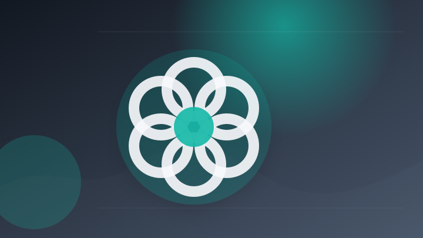
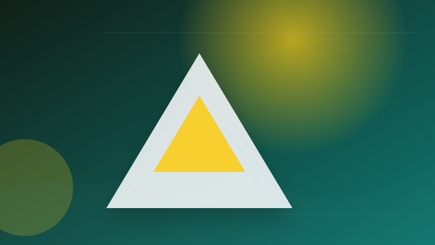
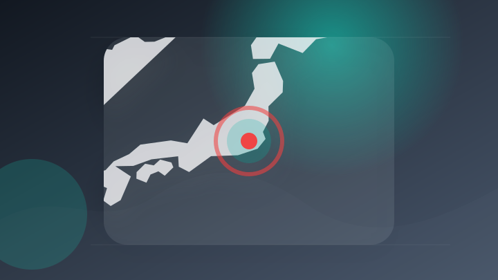
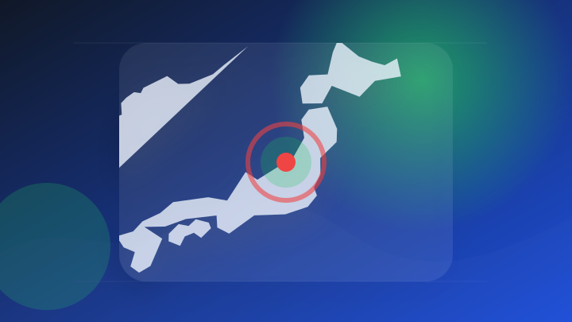
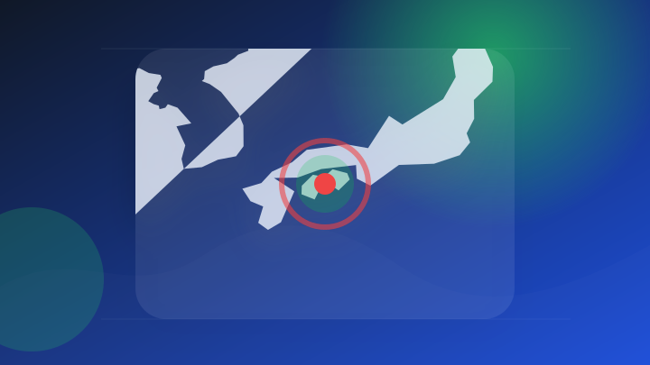
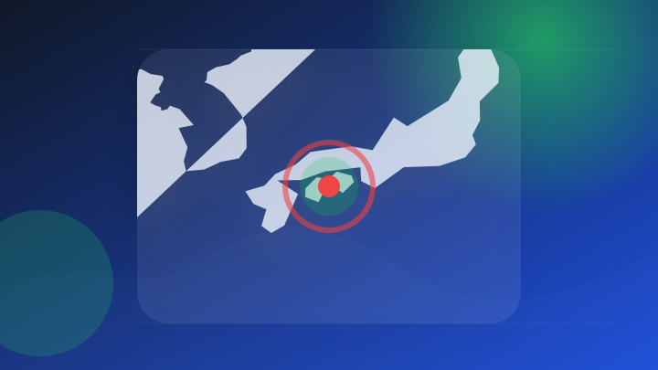

AI
6 topics
GPT-5.3 Instantとは？実際に利用した使用感や料金・従来モデルとの違い・使い方も解説！ - ai-market.jp
GPT-5.3 Instantとは？実際に利用した使用感や料金・従来モデルとの違い・使い方も解説！
- 注目ポイント
- 実務利用や企業導入の判断材料になりやすい話題です。RSS説明文では「GPT-5.3 Instantとは？実際に利用した使用感や料金・従来モデルとの違い・使い方…」と伝えています。出典: ai-market.jp
- 見るべきポイント
- 誰に影響するか、いつから変わるか、報道元が示す具体的な根拠を確認。
GeminiのGem機能とは？AI Market編集部の実使用レビュー、できること、特徴・料金・使い方解説！ - ai-market.jp
GeminiのGem機能とは？AI Market編集部の実使用レビュー、できること、特徴・料金・使い方解説！
- 注目ポイント
- 実務利用や企業導入の判断材料になりやすい話題です。RSS説明文では「GeminiのGem機能とは？AI Market編集部の実使用レビュー、できること、特徴・…」と伝えています。出典: ai-market.jp
- 見るべきポイント
- 誰に影響するか、いつから変わるか、報道元が示す具体的な根拠を確認。
Genspark AIシートとは？料金プラン・使い方・実例を完全解説【実際に使って検証】 - ai-market.jp
Genspark AIシートとは？料金プラン・使い方・実例を完全解説【実際に使って検証】
- 注目ポイント
- 実務利用や企業導入の判断材料になりやすい話題です。RSS説明文では「Genspark AIシートとは？料金プラン・使い方・実例を完全解説【実際に使って検証】」と伝えています。出典: ai-market.jp
- 見るべきポイント
- 誰に影響するか、いつから変わるか、報道元が示す具体的な根拠を確認。
Stella AI、SpaceXAI社の「Grok 4.5」に対応 - ニコニコニュース
Stella AI、SpaceXAI社の「Grok 4.5」に対応 ニコニコニュース
- 注目ポイント
- 実務利用や企業導入の判断材料になりやすい話題です。RSS説明文では「Stella AI、SpaceXAI社の「Grok 4.5」に対応 ニコニコニュース」と伝えています。出典: ニコニコニュース
- 見るべきポイント
- 誰に影響するか、いつから変わるか、報道元が示す具体的な根拠を確認。

ChatGPTでサイバー攻撃か 高校1年の男子生徒逮捕 「バンダイチャンネル」運営会社に（テレビ朝日系（ANN）） - Yahoo!ニュース
ChatGPTでサイバー攻撃か 高校1年の男子生徒逮捕 「バンダイチャンネル」運営会社に（テレビ朝日系（ANN））…
- 注目ポイント
- 安全・業務・生活への影響確認が必要な話題です。RSS説明文では「ChatGPTでサイバー攻撃か 高校1年の男子生徒逮捕 「バンダイチャンネル」運営会社に（…」と伝えています。出典: Yahoo!ニュース
- 見るべきポイント
- 発生場所と時刻、警察・消防など公的機関の発表、続報で変わった点を確認。

Claude Codeの開発者、ボリス・チェルニー： 「もう私はClaudeにプロンプトを入力しない。ループが動いていて - KuCoin
Claude Codeの開発者、ボリス・チェルニー： 「もう私はClaudeにプロンプトを入力しない。ループが動い…
- 注目ポイント
- 実務利用や企業導入の判断材料になりやすい話題です。RSS説明文では「Claude Codeの開発者、ボリス・チェルニー： 「もう私はClaudeにプロンプトを…」と伝えています。出典: KuCoin
- 見るべきポイント
- 誰に影響するか、いつから変わるか、報道元が示す具体的な根拠を確認。
IT業界
6 topics

フィジカルAIロボット 量産計画発表 三菱自動車と東京大学発のスタートアップ企業 - FNNプライムオンライン
フィジカルAIロボット 量産計画発表 三菱自動車と東京大学発のスタートアップ企業 FNNプライムオンライン
- 注目ポイント
- 実務利用や企業導入の判断材料になりやすい話題です。RSS説明文では「フィジカルAIロボット 量産計画発表 三菱自動車と東京大学発のスタートアップ企業 FNNプ…」と伝えています。出典: FNNプライムオンライン
- 見るべきポイント
- 誰に影響するか、いつから変わるか、報道元が示す具体的な根拠を確認。
$マイクロン・テクノロジー (MU.US)$ スペースXで失った資金は全てMUで取り戻せそうだ。これが良い方向であってほしい。 - Moomoo
$マイクロン・テクノロジー (MU.US)$ スペースXで失った資金は全てMUで取り戻せそうだ。これが良い方向であ…
- 注目ポイント
- 前日の動向として押さえておきたい話題です。RSS説明文では「$マイクロン・テクノロジー (MU.US)$ スペースXで失った資金は全てMUで取り戻せそ…」と伝えています。出典: Moomoo
- 見るべきポイント
- 誰に影響するか、いつから変わるか、報道元が示す具体的な根拠を確認。
マイクロソフト株、集団訴訟と2026年度第4四半期決算発表を控え約2％下落 - Traders Union
マイクロソフト株、集団訴訟と2026年度第4四半期決算発表を控え約2％下落 Traders Union
- 注目ポイント
- 企業活動や市場の見方に影響しやすい話題です。RSS説明文では「マイクロソフト株、集団訴訟と2026年度第4四半期決算発表を控え約2％下落 Traders…」と伝えています。出典: Traders Union
- 見るべきポイント
- 対象期間、金額・変化率、前回との比較、生活や市場への影響を確認。
$マイクロン・テクノロジー (MU.US)$ スペースXよりも、ここには期待が持てそうだ - Moomoo
$マイクロン・テクノロジー (MU.US)$ スペースXよりも、ここには期待が持てそうだ Moomoo
- 注目ポイント
- 前日の動向として押さえておきたい話題です。RSS説明文では「$マイクロン・テクノロジー (MU.US)$ スペースXよりも、ここには期待が持てそうだ…」と伝えています。出典: Moomoo
- 見るべきポイント
- 誰に影響するか、いつから変わるか、報道元が示す具体的な根拠を確認。
ゴールドマン・サックスはマイクロソフト(MSFT.US)のレーティングを強気に据え置き、目標株価を610ドルに据え置いた - Moomoo
ゴールドマン・サックスはマイクロソフト(MSFT.US)のレーティングを強気に据え置き、目標株価を610ドルに据え…
- 注目ポイント
- 企業活動や市場の見方に影響しやすい話題です。RSS説明文では「ゴールドマン・サックスはマイクロソフト(MSFT.US)のレーティングを強気に据え置き、目…」と伝えています。出典: Moomoo
- 見るべきポイント
- 対象期間、金額・変化率、前回との比較、生活や市場への影響を確認。
$マイクロン・テクノロジー (MU.US)$ 全員無事に利益確定して退場しました。私は一旦様子見します。外は危険です。。。 - Moomoo
$マイクロン・テクノロジー (MU.US)$ 全員無事に利益確定して退場しました。私は一旦様子見します。外は危険で…
- 注目ポイント
- 前日の動向として押さえておきたい話題です。RSS説明文では「$マイクロン・テクノロジー (MU.US)$ 全員無事に利益確定して退場しました。私は一旦…」と伝えています。出典: Moomoo
- 見るべきポイント
- 誰に影響するか、いつから変わるか、報道元が示す具体的な根拠を確認。
政治
6 topics
「安倍晋三 回顧展」で見ることができる「人間・安倍晋三」が遺したもの - radiko news
「安倍晋三 回顧展」で見ることができる「人間・安倍晋三」が遺したもの radiko news
- 注目ポイント
- 前日の動向として押さえておきたい話題です。RSS説明文では「「安倍晋三 回顧展」で見ることができる「人間・安倍晋三」が遺したもの radiko news」と伝えています。出典: radiko news
- 見るべきポイント
- 誰に影響するか、いつから変わるか、報道元が示す具体的な根拠を確認。
統一地方選 第４次公認を決定 : ブログ : ❤さかい妙子 練馬区議会議員❤ - 公明党
統一地方選 第４次公認を決定 : ブログ : ❤さかい妙子 練馬区議会議員❤ 公明党
- 注目ポイント
- 制度変更や政策判断につながる可能性がある話題です。RSS説明文では「統一地方選 第４次公認を決定 : ブログ : ❤さかい妙子 練馬区議会議員❤ 公明党」と伝えています。出典: 公明党
- 見るべきポイント
- 誰に影響するか、いつから変わるか、報道元が示す具体的な根拠を確認。
水俣病救済法案を国会へ再提出、野党5会派が参議院に 賛同拡大が課題 - 47NEWS
水俣病救済法案を国会へ再提出、野党5会派が参議院に 賛同拡大が課題 47NEWS
- 注目ポイント
- 制度変更や政策判断につながる可能性がある話題です。RSS説明文では「水俣病救済法案を国会へ再提出、野党5会派が参議院に 賛同拡大が課題 47NEWS」と伝えています。出典: 47NEWS
- 見るべきポイント
- 対象になる人、決定済みか検討中か、施行日・申請期限を確認。
『Return to My Blue』国会インクルーシブ試写会 - cinema-factory.jp
『Return to My Blue』国会インクルーシブ試写会
- 注目ポイント
- 制度変更や政策判断につながる可能性がある話題です。RSS説明文では「『Return to My Blue』国会インクルーシブ試写会」と伝えています。出典: cinema-factory.jp
- 見るべきポイント
- 誰に影響するか、いつから変わるか、報道元が示す具体的な根拠を確認。

水俣病救済法案を国会へ再提出、野党5会派が参議院に 賛同拡大が課題 - 新潟日報
水俣病救済法案を国会へ再提出、野党5会派が参議院に 賛同拡大が課題 新潟日報
- 注目ポイント
- 制度変更や政策判断につながる可能性がある話題です。RSS説明文では「水俣病救済法案を国会へ再提出、野党5会派が参議院に 賛同拡大が課題 新潟日報」と伝えています。出典: 新潟日報
- 見るべきポイント
- 対象になる人、決定済みか検討中か、施行日・申請期限を確認。
オーストラリア、インドに発電用ウラン供給へ 両国首相が合意 原発拡大へ安定確保 - 産経ニュース
オーストラリア、インドに発電用ウラン供給へ 両国首相が合意 原発拡大へ安定確保 産経ニュース
- 注目ポイント
- 制度変更や政策判断につながる可能性がある話題です。RSS説明文では「オーストラリア、インドに発電用ウラン供給へ 両国首相が合意 原発拡大へ安定確保 産経ニュース」と伝えています。出典: 産経ニュース
- 見るべきポイント
- 誰に影響するか、いつから変わるか、報道元が示す具体的な根拠を確認。
ライフ
2 topics
熱中症対策は“組織”の時代へ…生活にも変化 “警戒アラート”最多 真夏日544地点（テレビ朝日系（ANN）） - Yahoo!ニュース
熱中症対策は“組織”の時代へ…生活にも変化 “警戒アラート”最多 真夏日544地点（テレビ朝日系（ANN）） Ya…
- 注目ポイント
- 前日の動向として押さえておきたい話題です。RSS説明文では「熱中症対策は“組織”の時代へ…生活にも変化 “警戒アラート”最多 真夏日544地点（テレビ…」と伝えています。出典: Yahoo!ニュース
- 見るべきポイント
- 誰に影響するか、いつから変わるか、報道元が示す具体的な根拠を確認。
熱中症対策は“組織”の時代へ…生活にも変化 “警戒アラート”最多 真夏日544地点 (テレビ朝日系（ANN）) - Yahoo!ニュース
熱中症対策は“組織”の時代へ…生活にも変化 “警戒アラート”最多 真夏日544地点 (テレビ朝日系（ANN）) Y…
- 注目ポイント
- 前日の動向として押さえておきたい話題です。RSS説明文では「熱中症対策は“組織”の時代へ…生活にも変化 “警戒アラート”最多 真夏日544地点 (テレ…」と伝えています。出典: Yahoo!ニュース
- 見るべきポイント
- 誰に影響するか、いつから変わるか、報道元が示す具体的な根拠を確認。
災害
2 topics
「親しみのある特別な国」山本由伸が大地震で被害のベネズエラへビデオメッセージ オリックス・マチャドが感謝（デイリースポーツ） - Yahoo!ニュース
「親しみのある特別な国」山本由伸が大地震で被害のベネズエラへビデオメッセージ オリックス・マチャドが感謝（デイリー…
- 注目ポイント
- 安全・業務・生活への影響確認が必要な話題です。RSS説明文では「「親しみのある特別な国」山本由伸が大地震で被害のベネズエラへビデオメッセージ オリックス・…」と伝えています。出典: Yahoo!ニュース
- 見るべきポイント
- 対象地域、発生・更新時刻、自治体や気象機関の最新情報を確認。

和歌山県南方沖で地震 香南市で震度２【高知】（2026年7月9日掲載）｜RKC NEWS NNN - 日テレNEWS NNN
和歌山県南方沖で地震 香南市で震度２【高知】（2026年7月9日掲載）
- 注目ポイント
- 安全・業務・生活への影響確認が必要な話題です。RSS説明文では「和歌山県南方沖で地震 香南市で震度２【高知】（2026年7月9日掲載）」と伝えています。出典: 日テレNEWS NNN
- 見るべきポイント
- 対象地域、発生・更新時刻、自治体や気象機関の最新情報を確認。
社会
2 topics
父親を殺害して現金１２００万円奪った疑い、４６歳男を再逮捕…周囲に「父親は無事」と話し借金返済 - 読売新聞
父親を殺害して現金１２００万円奪った疑い、４６歳男を再逮捕…周囲に「父親は無事」と話し借金返済 読売新聞
- 注目ポイント
- 前日の動向として押さえておきたい話題です。RSS説明文では「父親を殺害して現金１２００万円奪った疑い、４６歳男を再逮捕…周囲に「父親は無事」と話し借金…」と伝えています。出典: 読売新聞
- 見るべきポイント
- 発生場所と時刻、警察・消防など公的機関の発表、続報で変わった点を確認。

車４台が絡む事故 高知県安芸市の大山道路 - kochinews.co.jp
車４台が絡む事故 高知県安芸市の大山道路 kochinews.co.jp
- 注目ポイント
- 安全・業務・生活への影響確認が必要な話題です。RSS説明文では「車４台が絡む事故 高知県安芸市の大山道路 kochinews.co.jp」と伝えています。出典: kochinews.co.jp
- 見るべきポイント
- 発生場所と時刻、警察・消防など公的機関の発表、続報で変わった点を確認。
金融
2 topics
Kresus、自己保管ユーザー向けに暗号資産相続サービスを開始 - KuCoin
Kresus、自己保管ユーザー向けに暗号資産相続サービスを開始 KuCoin
- 注目ポイント
- 前日の動向として押さえておきたい話題です。RSS説明文では「Kresus、自己保管ユーザー向けに暗号資産相続サービスを開始 KuCoin」と伝えています。出典: KuCoin
- 見るべきポイント
- 誰に影響するか、いつから変わるか、報道元が示す具体的な根拠を確認。
骨太方針で「日銀の独立性」に言及で調整 政府、「圧力」否定ねらう [高市早苗首相 自民党総裁] - 朝日新聞
骨太方針で「日銀の独立性」に言及で調整 政府、「圧力」否定ねらう [高市早苗首相 自民党総裁] 朝日新聞
- 注目ポイント
- 制度変更や政策判断につながる可能性がある話題です。RSS説明文では「骨太方針で「日銀の独立性」に言及で調整 政府、「圧力」否定ねらう [高市早苗首相 自民党総…」と伝えています。出典: 朝日新聞
- 見るべきポイント
- 誰に影響するか、いつから変わるか、報道元が示す具体的な根拠を確認。